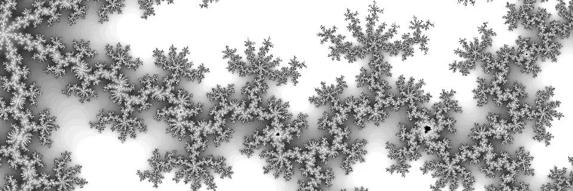

About

I build embedded devices end-to-end: the schematic and PCB, the firmware that runs on them, and the test tools that check them on the production line.
Since 2010 I've worked where reliability isn't optional, from ATEX-rated control systems for underground coal conveyors to the controllers that run factory floors. Today I work on firmware at Teltonika Telematics, on the FT platform behind its latest generation of GPS trackers, and on bringing AI-assisted workflows into embedded development.
Because I've worked on both sides of the board, I can usually tell whether a problem is in the firmware, the silicon or the layout, and fix it.
Selected projects
- FTC164 / FTM164 vehicle trackers (Teltonika, 2025–2026): firmware for configurable pinouts and factory testing, on battery trackers that run up to 150 days on a single charge.
- FT platform (Teltonika): the fifth-generation firmware platform for Teltonika's GPS trackers, with dead reckoning for tunnels and underground car parks.
- ControlLogix 5580 / CompactLogix 5380 (Rockwell Automation, 2019–2023): new communication features for controller firmware releases v33 and v34.
- Exta Life smart home (Zamel, 2016–2019): hardware and firmware for 868 MHz radio devices, including a relay receiver, a roller blind controller and a battery-powered temperature sensor.
- EH-SAB (Elgór + Hansen, 2010–2015): ATEX-rated devices that control and monitor coal conveyors in mines, with a Linux-based main controller.
What I work with
- Firmware: C / C++, FreeRTOS, Zephyr, VxWorks, bare metal, Yocto Linux
- Connectivity: BLE, sub-GHz, Modbus, RS232/RS485, TCP/IP, UDP, WebSockets
- Hardware: Altium Designer, PCB design, bring-up and debugging (SWD, J-Link), EMC, low-power design
If you're working on something similar or just want to talk embedded, get in touch.